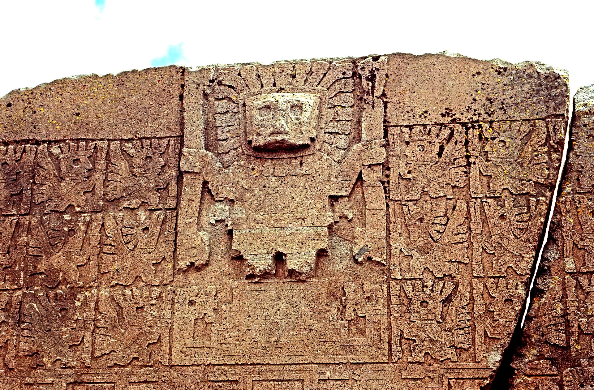

Which worlds
keep meeting?
Every proposed comparison here joins two cultural traditions. Gathered as clusters, they show where this collection’s questions concentrate — and where an ordinary explanation is already on the table.
A cluster is an index entry, not a verdict. Counting comparisons cannot make them independent, and nothing below establishes that two traditions ever met.


Göbekli Tepe
& Rapa Nui.
One pair carries more separate comparisons than any other in the collection: birds beside rounded forms, hands drawn across a torso, ribs cut into a lean body. Two of the three lines have been examined against sources rather than only collected.
No transmission route has been established for any of them — and about 16,900 km of ocean and land, plus several millennia, separate the registered contexts. That distance is a reason to look harder at the objects, not evidence of a link.
- Birdmen across two worldsEvidence examined · No route established in this review
- Hands drawn toward the bodySources partly checked · No route established in this review
- Bodies with visible ribsSources partly checked · No route established in this review
A sparse table.
23 of the 210 possible pairings between these traditions carry a comparison. Sparseness describes what has been collected, not a measurement of the world.
| Rapanui traditions | Mesopotamian accounts | Neolithic Anatolia | Assyrian imagery | Olmec La Venta | Tiwanaku | Andean accounts | Identity still open | Nahua accounts | Arnhem Land · attribution open | Epiclassic Cacaxtla | Greek Delphi | Indus / Harappan | Jiroft region | Lingjiatan | Maya Chichén Itzá | Mississippian Cahokia | Muisca accounts | Old Kingdom Egypt | Pohnpei · story untraced | Vedic textual tradition | |
|---|---|---|---|---|---|---|---|---|---|---|---|---|---|---|---|---|---|---|---|---|---|
| Rapanui traditions | 3 | 2 | 2 | 1 | 1 | 1 | 1 | ||||||||||||||
| Mesopotamian accounts | 1 | 1 | 1 | 1 | 1 | ||||||||||||||||
| Neolithic Anatolia | 3 | 1 | 1 | 1 | 1 | ||||||||||||||||
| Assyrian imagery | 2 | 1 | 1 | 1 | |||||||||||||||||
| Olmec La Venta | 1 | 1 | 1 | 1 | |||||||||||||||||
| Tiwanaku | 2 | 1 | 1 | ||||||||||||||||||
| Andean accounts | 1 | 1 | |||||||||||||||||||
| Identity still open | 1 | 1 | |||||||||||||||||||
| Nahua accounts | 1 | 1 | |||||||||||||||||||
| Arnhem Land · attribution open | 1 | ||||||||||||||||||||
| Epiclassic Cacaxtla | 1 | ||||||||||||||||||||
| Greek Delphi | 1 | ||||||||||||||||||||
| Indus / Harappan | 1 | ||||||||||||||||||||
| Jiroft region | 1 | ||||||||||||||||||||
| Lingjiatan | 1 | ||||||||||||||||||||
| Maya Chichén Itzá | 1 | ||||||||||||||||||||
| Mississippian Cahokia | 1 | ||||||||||||||||||||
| Muisca accounts | 1 | ||||||||||||||||||||
| Old Kingdom Egypt | 1 | ||||||||||||||||||||
| Pohnpei · story untraced | 1 | ||||||||||||||||||||
| Vedic textual tradition | 1 |
Each number is how many separate lines of comparison the pair carries. The ranked index below carries the same information as text.
Where the questions concentrate.
Ordered by how many comparisons remain open after a source check — never by how strong or how independent the evidence is.
-
01 · examined in depth
Neolithic Anatolia ↔ Rapanui traditions
Birds & human forms · The bird & the rounded form · Hands across the torso · Ribs & lean bodies
- Birdmen across two worldsEvidence examined · No route established in this review
- Hands drawn toward the bodySources partly checked · No route established in this review
- Bodies with visible ribsSources partly checked · No route established in this review
3 lines of comparison · 3 without an established route · 4 motif families · 13 registered objectsOpen the cluster → -

 02 · source checks begun
02 · source checks begunRapanui traditions ↔ Tiwanaku
Hands across the torso · Birds & human forms
- Hands drawn toward the bodySources partly checked · No route established in this review
- Bird-headed attendants across traditionsSources partly checked · Transmission not yet assessed
2 lines of comparison · 2 without an established route · 2 motif families · 8 registered objectsOpen the cluster → -
 03 · source checks begun
03 · source checks begunAssyrian imagery ↔ Rapanui traditions
Birds & human forms
- Human bodies, bird headsSources partly checked · No route established in this review
- Bird-headed attendants across traditionsSources partly checked · Transmission not yet assessed
2 lines of comparison · 2 without an established route · 1 motif family · 6 registered objectsOpen the cluster → -

04 · source checks begunAssyrian imagery ↔ Tiwanaku
Birds & human forms
- Bird-headed attendants across traditionsSources partly checked · Transmission not yet assessed
1 line of comparison · 1 without an established route · 1 motif family · 6 registered objectsOpen the cluster → -
 05 · source checks begun
05 · source checks begunEpiclassic Cacaxtla ↔ Rapanui traditions
Birds & human forms
- Costume or transformation?Sources partly checked · No route established in this review
1 line of comparison · 1 without an established route · 1 motif family · 5 registered objectsOpen the cluster → -
Account · editorial paraphrase
A creator and teacher travels through the Andes and departs across the sea.
∿Account · editorial paraphraseA being from the sea teaches people, then returns to the water at night.
∿06 · examined in depthAndean accounts ↔ Mesopotamian accounts
Teachers & travellers
- Teachers from another worldEvidence examined · No route established in this review
1 line of comparison · 1 without an established route · 1 motif family · 3 registered objectsOpen the cluster → -
Account · editorial paraphrase
A creator and teacher travels through the Andes and departs across the sea.
∿Account · editorial paraphraseCrafts and teachings are associated with Tollan; a later departure uses a serpent raft.
∿07 · examined in depthAndean accounts ↔ Nahua accounts
Teachers & travellers
- Teachers from another worldEvidence examined · No route established in this review
1 line of comparison · 1 without an established route · 1 motif family · 3 registered objectsOpen the cluster → -
08 · source checks begun
Assyrian imagery ↔ Neolithic Anatolia
Handled forms
- The so-called handbagsSources partly checked · No route established in this review
1 line of comparison · 1 without an established route · 1 motif family · 3 registered objectsOpen the cluster → -
 09 · source checks begun
09 · source checks begunAssyrian imagery ↔ Olmec La Venta
Handled forms
- The so-called handbagsSources partly checked · No route established in this review
1 line of comparison · 1 without an established route · 1 motif family · 3 registered objectsOpen the cluster → -
Account · editorial paraphrase
A being from the sea teaches people, then returns to the water at night.
∿Account · editorial paraphraseCrafts and teachings are associated with Tollan; a later departure uses a serpent raft.
∿10 · examined in depthMesopotamian accounts ↔ Nahua accounts
Teachers & travellers
- Teachers from another worldEvidence examined · No route established in this review
1 line of comparison · 1 without an established route · 1 motif family · 3 registered objectsOpen the cluster → -
11 · source checks begun
Neolithic Anatolia ↔ Olmec La Venta
Handled forms
- The so-called handbagsSources partly checked · No route established in this review
1 line of comparison · 1 without an established route · 1 motif family · 3 registered objectsOpen the cluster → -
 12 · source checks begun
12 · source checks begunNeolithic Anatolia ↔ Tiwanaku
Hands across the torso
- Hands drawn toward the bodySources partly checked · No route established in this review
1 line of comparison · 1 without an established route · 1 motif family · 3 registered objectsOpen the cluster → -

 13 · examined in depth
13 · examined in depthIndus / Harappan ↔ Rapanui traditions
Signs & scripts
- Two unread scriptsEvidence examined · No route established in this review
1 line of comparison · 1 without an established route · 1 motif family · 2 registered objectsOpen the cluster → -
Account · editorial paraphrase
A being from the sea teaches people, then returns to the water at night.
∿Account · editorial paraphraseA teaching figure arrives by an inland route in the inspected colonial account.
∿14 · source checks begunMesopotamian accounts ↔ Muisca accounts
Teachers & travellers
- A sea journey that changes in the tellingClaim corrected · Transmission not yet assessed
1 line of comparison · 1 without an established route · 1 motif family · 2 registered objectsOpen the cluster → -
 15 · awaiting identification
15 · awaiting identificationJiroft region ↔ Olmec La Venta
Handled forms · Within a creature’s curve · Serpents & composite creatures
- Figures within serpentine worldsResearch lead · Transmission not yet assessed
1 line of comparison · 1 without an established route · 3 motif families · 2 registered objectsOpen the cluster → -
 16 · awaiting identification
16 · awaiting identificationArnhem Land · attribution open ↔ Neolithic Anatolia
Birds & human forms
- Another bird and rounded formResearch lead · Transmission not yet assessed
1 line of comparison · 1 without an established route · 1 motif family · 2 registered objectsOpen the cluster → -

 17 · awaiting identification
17 · awaiting identificationGreek Delphi ↔ Rapanui traditions
Centres of the world
- Stones at the centre of the worldResearch lead · Transmission not yet assessed
1 line of comparison · 1 without an established route · 1 motif family · 2 registered objectsOpen the cluster → -
Source record · image pending
A stepped masonry monument at Saqqara, Egypt.
∿Source record · image pendingA stepped temple platform at Chichén Itzá, Mexico.
∿18 · awaiting identificationOld Kingdom Egypt ↔ Maya Chichén Itzá
Stepped monuments
- Distant worlds, stepped monumentsResearch lead · Transmission not yet assessed
1 line of comparison · 1 without an established route · 1 motif family · 2 registered objectsOpen the cluster → -

 19 · awaiting identification
19 · awaiting identificationLingjiatan ↔ Identity still open
Animal sculpture
- Two animals, two uncertain captionsResearch lead · Transmission not yet assessed
1 line of comparison · 1 without an established route · 1 motif family · 2 registered objectsOpen the cluster → -
Account · editorial paraphrase
A being from the sea teaches people, then returns to the water at night.
∿ 20 · awaiting identification
20 · awaiting identificationMesopotamian accounts ↔ Pohnpei · story untraced
Teachers & travellers
- The navigator in the collageResearch lead · Transmission not yet assessed
1 line of comparison · 1 without an established route · 1 motif family · 2 registered objectsOpen the cluster → -

 21 · awaiting identification
21 · awaiting identificationMississippian Cahokia ↔ Rapanui traditions
Birds & human forms
- A birdman on a small tabletResearch lead · Transmission not yet assessed
1 line of comparison · 1 without an established route · 1 motif family · 2 registered objectsOpen the cluster → -
 22 · awaiting identification
22 · awaiting identificationOlmec La Venta ↔ Identity still open
Serpents & composite creatures
- When does a serpent become the same serpent?Research lead · Transmission not yet assessed
1 line of comparison · 1 without an established route · 1 motif family · 2 registered objectsOpen the cluster → -
Account · editorial paraphrase
A warning, a vessel, survival through a flood, then birds sent out to seek land.
∿Account · editorial paraphraseA fish warns Manu, has him prepare a boat, and guides it through the flood.
∿23 · awaiting identificationMesopotamian accounts ↔ Vedic textual tradition
Floods & survivors
- A warning, a boat, a world remadeSources partly checked · Regional transmission remains possible
1 line of comparison · 0 without an established route · 1 motif family · 2 registered objectsOpen the cluster →
What a cluster
cannot tell you.
A line of comparison is one proposed resemblance between two traditions. Its subcomparisons — a narrower look at the same pair of objects — are counted inside it, because they are not separate evidence.
“No route established” records the state of this review. 14 pairs reached that state after a source check; the rest are open mainly because their identifications are still unresolved. An unchecked lead is weaker than a checked one, not stronger.
Examples were selected because they resemble each other. That selection cannot tell us how often such forms occur worldwide, and similar human bodies, tools and birds constrain what any carver can produce.